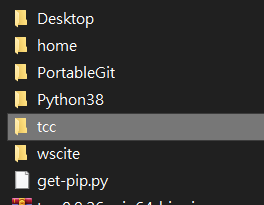
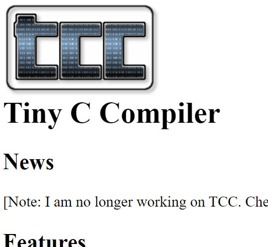
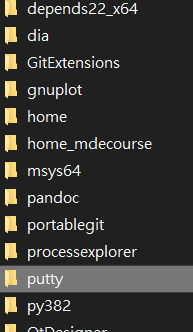

python 3.8.2 <<
Previous Next >> Question
basic Win10 portable programming
在你的可攜下創建一個data子目錄 :
 --everything-is-local
--everything-is-local
https://git-scm.com/download/win
要用git指令要有portablegit 。data下子目錄存取為portablegit(需與啟動檔配合)。
start.bat (參考) :

.
..
...
=================================================================

https://www.python.org/downloads/
選取需要的版本(EX : 3.8.2)
點取執行檔Windows x86-64 executable installer
data下子目錄存取的名稱要跟執行檔相配合(EX : py38)

.
..
...
=================================================================
編輯器(用來創建start.bat , stop.bat)
https://www.scintilla.org/SciTEDownload.html
解開檔案為wscite
通過打開SciTE.exe \ Option \ Open Global Options File
找到code.page的部分 , 把code.page=0給註記掉 , 並把code.page=65001取消註記


start.bat :
@echo off
set Disk=y
subst %Disk%: "data"
%Disk%:
set HomePath=%Disk%:\home_mdecourse
set HomeDrive=%Disk%:\home_mdecourse
set Home=%Disk%:\home_mdecourse
set USERPROFILE=%Disk%:\home_mdecourse
REM for putty
set GIT_HOME=%Disk%:\portablegit\bin\
set GIT_SSH=%Disk%:\putty\plink.exe
REM 將系統 Python 程式的 io 設為 utf-8
set PYTHONIOENCODING="utf-8"
set PYTHONPATH=%Disk%:\py38\DLLs;%Disk%:\py38\Lib;%Disk%:\py38\Lib\site-packages;
set PYTHONHOME=%Disk%:\py38
set path_python=%Disk%:\py38;%Disk%:\py38\Scripts;
set path_msys2=%Disk%:\msys64\mingw64\bin;
REM coreutils is for compiling fossil scm
set path_coreutils=%Disk%:\coreutils-5.3.0\bin;%Disk%:\depends22_x64;
set path_tcc=%Disk%:\tcc;
set path_cmake=%Disk%:\cmake-3.10.1-win64-x64\bin;
set path_nodejs=Disk%:\nodejs;%Disk%:\nodejs\appdata\roaming\npm;
set path_git=%Disk%:\portablegit\bin;
set path_xming=%Disk%:\Xming;
set path_latex=%%Disk%:\Pandoc;%Disk%:\TinyTeX\bin\win32;
path=%Disk%:;%path_python%;%path_msys2%;%path_tcc%;%path_git%;%path_cmake%;%path_coreutils%;
start /MIN cmd.exe
start /MIN cmd.exe
start /MIN cmd.exe
start /MIN cmd.exe
start /MIN %Disk%:\wscite\SciTE.exe
start /MIN %Disk%:\wscite\SciTE.exe
Exit
stop.bat
@echo off
set Disk=y
path=%PATH%;
taskkill /IM python.exe /F
taskkill /IM pythonw.exe /F
taskkill /IM node.exe /F
taskkill /IM Range.exe /F
taskkill /IM SciTE.exe /F
REM 終止虛擬硬碟與目錄的對應
subst %Disk%: /D
REM 關閉 cmd 指令視窗
taskkill /IM cmd.exe /F
EXIT
-
假使要快速比較修改前後 :，可使用一個工具 :
 KDiff3 - Home
KDiff3 - Home
http://kdiff3.sourceforge.net/

可即時看到檔案間的差別
也可以用來比較Tiny C Compiler
https://directory.fsf.org/wiki/Tiny_C_Compiler 檔案編輯前後的差異


https://bellard.org/tcc/
.
..
...
================================================================
pip
get-pip.py頁面存取成data下的get-pip.py
再繼續用 :
python -m pip install flask lxml bs4 flask-cors Markdown pelican leo
下載網際系統相關套件
==============================================================
HxD - Freeware Hex Editor and Disk Editor
https://mh-nexus.de/en/hxd/
選取該version區目前適合的版本
利用 HxD 修改 pip.exe 中python.exe 的所在位置(pip.exe是存取在p38的Scripts裡) , HxD 開啟之後搜尋c:\py38\python.exe , 然後將滑鼠停在 c 然後輸入y:\p37\python.exe, 以便讓可攜系統啟動後, 可以將指令搜尋路徑設到 y:\p38\Scripts , 這樣就可以直接以 "pip install " 指令安裝套件.
pip install Flask Markdown lxml bs4 flask_cors pelican leo
.
..
...
================================================================
MSYS2 installer
MSYS2 : https://www.msys2.org/

接著設定start.bat
REM 設定 msys2 64 位元的執行路徑
set path_msys2=%Disk%:\msys64\mingw64\bin;
path=%Disk%:;%path_python%;%path_git%;%path_msys2%;
.
..
...
=================================================================
ShareX
ShareX : https://getsharex.com/

.
..
...
=================================================================
Tmp (Y\tmp : git clone .....)

.
..
...
=================================================================
.
..
...
=================================================================
 Fossil
Fossil
https://www.fossil-scm.org/index.html/doc/trunk/www/build.wiki

.
..
...
=================================================================
putty putty

================================================================
python 3.8.2 <<
Previous Next >> Question